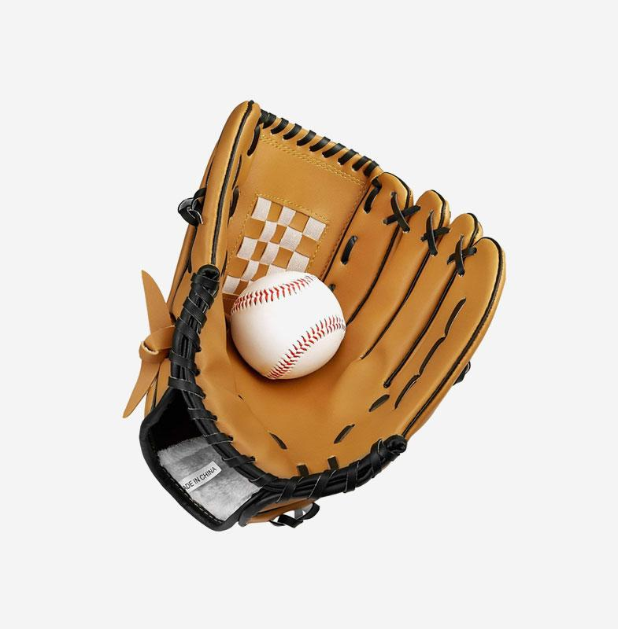

Product

Baseball Glove
$32.00
Complete Intervale Baseball Glove Sports Collection Crafted of a thicker, premium synthetic leather for recreational players that mimics the suppleness and durability of a true leather glove without the long break in period Features: A hand formed pocket allowing for easy scoop up or catch. Featured in strength, durability, and flexibility, perfect for baseball, softball, and other balls play Adjustable:..